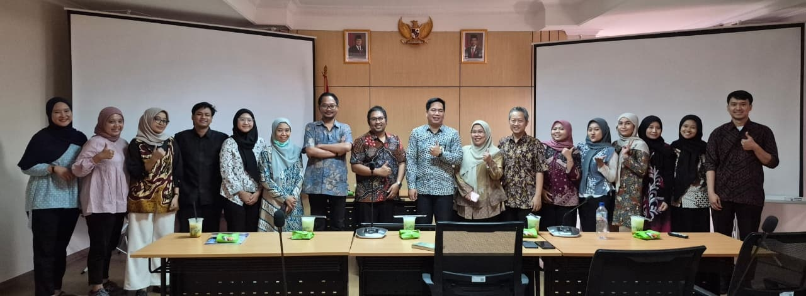
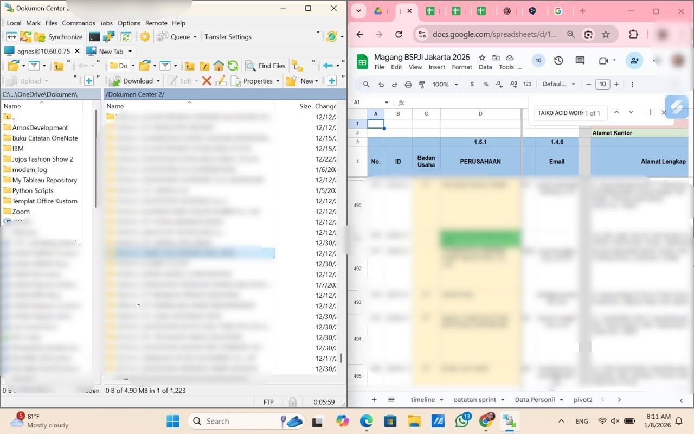

01 — Data Management & Validation
GOAL
Make operational data complete, consistent, and ready to use.
WHAT I DID
- Cleaned and validated 3,900+ service operational records.
- Checked for empty values, duplicates, and format issues, and filled gaps from the source.
- Standardized data formats and structure.
- Prepared the data for migration to an internal system.
RESULT
Clean operational data, ready for management and migration.


ExcelGoogle SheetsLooker Studio